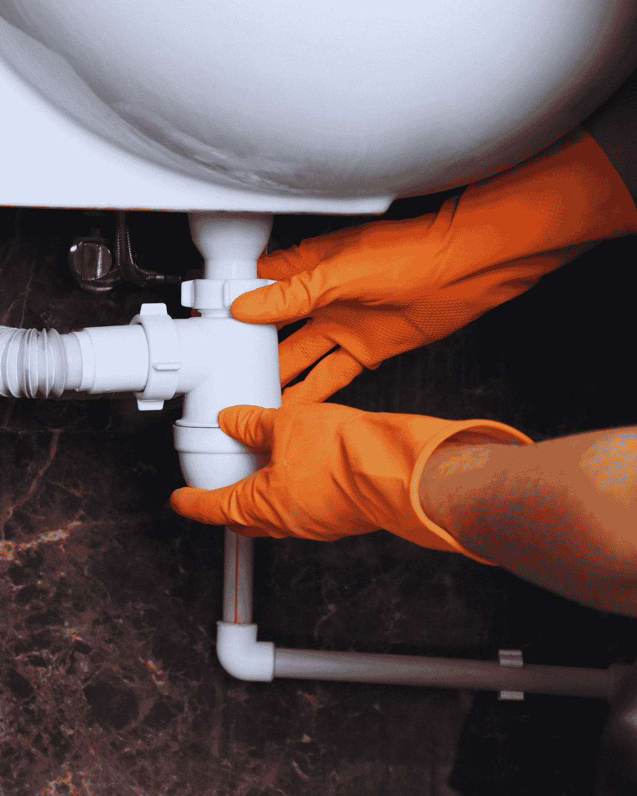

Home › Services
Plumbing Services in Boynton Beach, FL
Sixteen residential and commercial plumbing services, every one quoted flat rate and available same day across Boynton Beach and Palm Beach County. Every service below is available across our Palm Beach County service areas, from Delray Beach to West Palm Beach, on the same flat-rate pricing.
Full service list
Complete Residential and Commercial Plumbing Services
Our plumbing services in Boynton Beach cover the whole system, from a dripping faucet to a full sewer lateral replacement. Pick the service that matches your problem, or call and describe what is happening and we will point you to the right visit.
Each service page below explains the warning signs to watch for, exactly what the visit includes, what drives the price, and the local conditions that cause that particular failure in Palm Beach County homes. Everything is quoted as one written number before work starts.
Emergency Plumber
When a supply line lets go or sewage comes up through a floor drain, the first job is stopping the water and the second is telling you what the repair costs. Our emergency plumbers in Boynton Beach walk you through the shutoff on the phone, arrive with a stocked truck, and hand you a written flat price before anything is opened up.
Drain Cleaning
Slow showers, gurgling sinks and a main line that backs up every few months are rarely one hair clog. They are grease, scale and old cast iron that has narrowed over decades. We clear the blockage with cabling or hydro jetting, then camera the pipe so you can see whether it was a clog or a damaged line causing it.
Water Heater Repair & Installation
No hot water, rusty hot water or a puddle under the tank each point somewhere different. We test elements, thermostats, gas valves and the anode rod before quoting, because a failed part costs a fraction of a new heater. When the tank really is finished, we replace 40 to 80 gallon units with the permit and haul-away included.
Tankless Water Heater Installation
A tankless water heater ends the back-to-back shower problem and frees up the closet or garage floor. Getting twenty years out of one depends on demand sizing, gas or electrical capacity and descaling access, not the brand on the box. We size the unit to your real fixture load and build in isolation valves for annual flushing.
Leak Detection and Repair
A water bill that doubled with nothing visible means water is escaping somewhere you cannot see. Acoustic listening equipment, thermal imaging and pressure isolation let us pinpoint hidden leaks in walls, slabs, irrigation and pool lines, usually within inches. Demolition is the last resort here, never the opening move.
Slab Leak Repair
Warm patches on a tile floor, running water with every tap closed and hairline cracks across a room all point under the concrete. Boynton Beach homes sit on slabs with copper poured into them, so this is one of our most common calls. We locate the leak precisely, then price spot repair, overhead reroute and repipe side by side.
Sewer Line Repair and Replacement
Repeat main line backups, sewage smell in the yard and a soggy strip of lawn mean the lateral itself has failed. We run a recorded camera inspection the full length of the pipe, locate every defect and its depth, then quote spot repair, trenchless lining or full replacement based on what the footage actually shows.
Pipe Repair and Installation
One pinhole in newer pipe is a repair. The third leak in sixty-year-old copper is a system telling you it is finished. We handle single burst lines and whole-home repiping in PEX, CPVC and copper, routed through attic and walls with small drywall openings, pressure tested, inspected under permit and patched when we leave.
Toilet Repair and Installation
Most toilet complaints are a flapper, a fill valve or a wax ring, and all three are same-visit fixes. The ones worth taking seriously are water at the base and a bowl that rocks, because both mean the flange seal is leaking into your subfloor on every flush. We repair, reseal or install new comfort-height units.
Faucet & Fixture Installation
Kitchen faucets, shower valves, tub spouts, pot fillers and bidet seats installed properly, with new quarter-turn angle stops and braided supply lines every time. Old seized shutoffs are the single most common cause of a call-back leak, and replacing them while the cabinet is already open costs almost nothing extra.
Kitchen and Bathroom Plumbing
Remodel plumbing runs in two stages: rough-in while the walls are open, then trim once the tile and cabinets are set. Getting drain slope, valve depth and vent placement right at rough-in is what prevents the classic remodel problems. We coordinate both visits directly with your contractor and manage the inspections.
Garbage Disposal Repair & Installation
A disposal that hums is jammed, one that is silent has lost power, and one dripping from the bottom seam has a failed motor seal that cannot be repaired. We diagnose the unit and the drain plumbing together, because a badly pitched trap arm or a missing dishwasher high loop will keep clogging no matter how good the disposal is.
Gas Line Repair and Installation
New gas runs for ranges, dryers, pool heaters, outdoor kitchens and standby generators, sized by BTU load so every appliance works at once. Every line we install is supported and sleeved to code, pressure tested, electronically leak checked at each joint and inspected under permit before it is put into service.
Backflow Testing and Prevention
Irrigation systems, fire lines and commercial water service in Palm Beach County need annual certified backflow testing. We test with calibrated gauges, rebuild failed assemblies with manufacturer kits on the spot where possible, and file the report directly with your water provider so you stay compliant without chasing paperwork.
Water Filtration Installation
Local water is safe and hard, commonly 8 to 12 grains per gallon, which is why heaters fail early and shower doors never look clean. We test hardness, chlorine and dissolved solids on site, then size a softener, catalytic carbon tank or reverse osmosis system to your household instead of selling a packaged one-size unit.
Sump Pump Installation and Repair
With a water table only a few feet down, a failed pump during wet season means water in the structure. We test the full system, not just the motor: float travel, amperage draw, check valve function and discharge routing. Battery backup matters here because our heaviest rain usually arrives with a power outage attached.
Not sure which plumbing service you need?Describe the problem on the phone and we will tell you which visit fits, what it costs and when we can be there.

How we price
Flat Rate Plumbing Pricing, Agreed Before We Start
Every job on this list is quoted as a flat price after the plumber sees the actual problem. You approve it in writing, and that is what you pay. If the repair turns out to be smaller than expected, the price drops rather than climbs.
Diagnostic visits, such as hidden leak detection or a recurring main line backup, carry a flat service fee that is credited toward the repair when you go ahead with it. That way the diagnosis is real work rather than a sales call.
Permits are included in the quote wherever the City of Boynton Beach or Palm Beach County requires one. That covers water heater replacement, repiping, sewer line work and gas line installation, along with the inspection that follows.
- Access. An open cabinet, a garage install, an existing cleanout, versus work under a slab, behind tile or above a finished ceiling.
- What failed. A valve, stop, flapper or single fitting, versus a buried lateral, a slab run or a system at the end of its life.
- Pipe material. CPVC or PEX that can be cut and coupled, versus cast iron or galvanized, where the next joint often fails as you work.
- Scope. One isolated failure, versus repeat failures pointing to a whole-home repipe.
- Permit and inspection. A like-for-like repair needing no permit, versus water heaters, repipes, sewer and gas work, which must be permitted.
- Timing. A scheduled daytime appointment, versus after-hours, weekend or holiday emergency dispatch.
Where we work
Plumbing Services Available Across Palm Beach County
Boynton Beach is home base, and our trucks run daily to twelve nearby cities on the same schedule and pricing.
FAQs
Questions About Our Plumbing Services
Do you charge a fee just to come out?
For scheduled installations, replacements and quotes, no. For diagnostic work such as locating a hidden leak or finding the cause of a recurring backup there is a flat service fee, and it is credited toward the repair when you approve it.
Is your plumbing pricing really flat rate?
Yes. Your plumber inspects the actual problem and writes one price for the job before work starts. No hourly meter runs and no line items get added at the end. If the repair turns out smaller than expected, the price comes down.
What warranty comes with plumbing repairs?
Parts and labor coverage is printed on your invoice. Terms vary by service, and installed equipment such as water heaters also carries the manufacturer warranty.
Do you handle commercial plumbing services?
Yes, including restaurant grease line jetting, backflow testing programs for commercial properties, and repairs in multi-unit residential buildings.
Which plumbing services need a permit?
Water heater replacement, whole-home repiping, sewer line repair, gas line installation and most remodel plumbing. We pull the permit, meet the inspector and close it out as part of the quoted price.
How do I know which plumbing service I actually need?
You often do not, and that is fine. Describe the symptom on the phone rather than trying to name the job, and the plumber will tell you what it most likely is and what the visit will involve. Booking the wrong service is not a problem we pass on to you, because the price is set after someone has seen the actual failure.
Ready to book a plumber?
Call now for a price range on the phone, a flat written price at the door and a same-day arrival window.